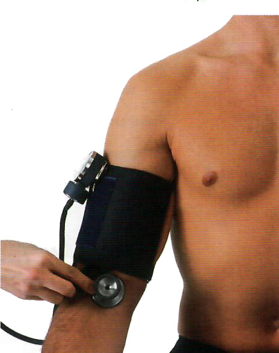

Lab3 - Module 1 - Anatomy of the Arm: Page 7 of 9
Blood Pressure Measurement - continued
To measure the blood pressure by palpation:
|
1. Inflate the cuff rapidly with the rubber bulb while palpating the radial pulse until you can no longer feel it: Make a mental note of that reading. Without stopping, continue to inflate the cuff to 30 mmHg above the level where the radial pulse could no longer be felt. |
| 2. Slowly deflate the cuff: Make a note of the pressure at which the radial pulse returns. This is the systolic pressure as measured by palpation. In a noisy situation where you cannot hear well enough to measure the blood pressure by auscultation, this will be the only blood pressure measurement you can make. You will not be able to measure the diastolic pressure by palpation. Record the palpated blood pressure as, for example, 120/P. |